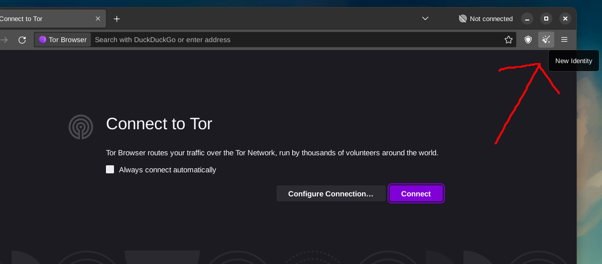
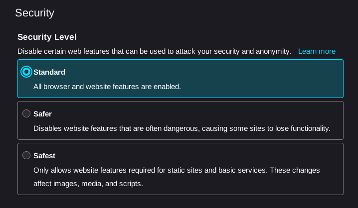

BytesOfProgress
Wiki
TOR-Browser Usage

Logo 2002-2019, Logo since 2019
The first thing to know is, that the TOR-Browser is a modified version of Mozilla Firefox, designed to route all your traffic through the TOR-Network. Therefore it is used like any other webbrowser in its basic funtions.
One should ONLY use the TOR-Browser installation provided by the official TOR-Project's sources! Not from a friend, not from your Linux distribution's package repositories, ONLY from Tor-Project's Source!
Even then, one should verify the GPG-Signature, to prevent using a compromised executable. How to verify the signature?
Done the right way, it will update either automatically, or let you know an update is necessary. This is important, to always get the latest security updates.
Also consider using Tails.
Usage
Every time the TOR-Browser is closed, it clears cookies and browsing history completely.
You can create different identities (New Identity button) to avoid linking your activities.
The button right next to it, the little shield, link to your security settings. There are 3 pre-configured security settings: Standard, Safer, Safest:
Standard: All browser and website features are enabled.
Safer: Disables website features that are often dangerous, causing some sites to lose functionality. JavaScript is disabled on non-HTTPS sites. Some fonts and math symbols are disabled. Audio and video (HTML5 media), and WebGL are click-to-play.
Safest: Only allows website features required for static sites and basic services. These changes affect images, media, and scripts. JavaScript is disabled by default on all sites. Some fonts, icons, math symbols, and images are disabled. Audio and video (HTML5 media), and WebGL are click-to-play.
Avoid enabling JavaScript unless necessary, as it can potentially reveal your identity.
back